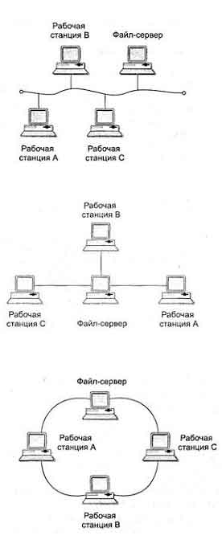

Вычислительные системы, сети и телекоммуникации.
Информационно-вычислительная сеть (вычислительная сеть), представляет собой систему
компьютеров,
объединенных каналами передачи данных.
Основное назначение информационно-вычислительных
сетей (ИВС) —
обеспечение эффективного предоставления различных информационно-вычислительных услуг
пользователям сети путем
организации удобного и надежного доступа к ресурсам, распределенным в этой сети.
Информационные системы, построенные на базе ИВС, обеспечивают эффективное выполнение следующих задач:
- хранение данных;
- обработка данных;
- организация доступа пользователей к данным;
- передача данных и результатов обработки данных пользователям.
Основные показатели качества ИВС:
- Полнота выполняемых функций. Сеть должна обеспечивать выполнение всех предусмотренных для нее функций и по доступу ко всем ресурсам, и по совместной работе узлов, и по реализации всех протоколов и стандартов работы.
- Производительность — среднее количество запросов пользователей сети, исполняемых за единицу времени.
- Пропускная способность определяется количеством данных, передаваемых через сеть (или ее звено — сегмент) за единицу времени.
- Надежность сети — чаще всего характеризуется средним временем наработки на отказ.
- Достоверность результатной информации
- Безопасность— способность сети обеспечить защиту информации от несанкционированного доступа.
- Прозрачность сети - означает невидимость особенностей внутренней архитектуры сети для пользователя: в оптимальном случае он должен обращаться к ресурсам сети как к локальным ресурсам своего собственного компьютера.
- Масштабируемость — возможность расширения сети без заметного снижения ее производительности.
- Универсальность сети — возможность подключения к сети разнообразного технического оборудования и программного обеспечения от разных производителей.
Классификация ИВС по размеру охватываемой территории, принципу передачи сигнала и топологии.
Информационно-вычислительные сети (ИВС), в зависимости от территории, ими охватываемой, подразделяются на:
• локальные (ЛВС или LAN — Local Area Network);
• региональные (РВС или MAN — Metropolitan Area Network);
• глобальные (ГВС или WAN — Wide Area Network).
Локальной называется сеть, абоненты которой находятся на небольшом (до 10-15 км) расстоянии друг от друга. ЛВС объединяет абонентов, расположенных в пределах небольшой территории. Обычно такая сеть привязана к конкретному объекту. К классу ЛВС относятся сети отдельных предприятий, фирм, банков, офисов, корпораций и т. д. Если такие ЛВС имеют абонентов, расположенных в разных помещения, то они часто используют инфраструктуру глобальной сети Интернет и их принято называть корпоративными сетями или сетями интранет (intranet).
Региональные сети связывают абонентов города, района, области или даже небольшой страны. Обычно расстояния между абонентами региональной ИВС составляют десятки — сотни километров.
Глобальные сети объединяют абонентов, удаленных друг от друга на значительное расстояние, часто расположенных в различных странах или на разных континентах. Взаимодействие между абонентами такой сети может осуществляться на базе телефонных линий связи, систем радиосвязи и даже спутниковой связи.
Объединение глобальных, региональных и локальных вычислительных сетей позволяет создавать многосетевые иерархии. Они обеспечивают мощные, экономически целесообразные средства обработки огромных информационных массивов и доступ к неограниченным информационным ресурсам. Локальные вычислительные сети могут входить как компоненты в состав региональной сети, региональные сети — объединяться в составе глобальной сети, и, наконец, глобальные сети могут также образовывать сложные структуры. Именно такая структура принята в сети Интернет.
По принципу организации передачи данных сети можно разделить на две группы:
• последовательные;
• широковещательные.
В последовательных сетях передача данных выполняется последовательно от одного узла к другому и каждый узел ретранслирует принятые данные дальше. Практически все глобальные, региональные и многие локальные сети относятся к этому типу.
В широковещательных сетях в каждый момент времени передачу может вести только один узел, остальные узлы могут только принимать информацию. К такому типу сетей относится значительная часть ЛВС, использующая один общий канал связи (моноканал) или одно общее пассивное коммутирующее устройство.
По геометрии построения (топологии) ИВС могут быть:
- шинные (линейные, bus);
- кольцевые (петлевые, ring);
- радиальные (звездообразные, star);
- распределенные радиальные (сотовые, cellular);
- иерархические (древовидные, hierarchy);
- полносвязные (сетка, mesh);
- смешанные (гибридные).
